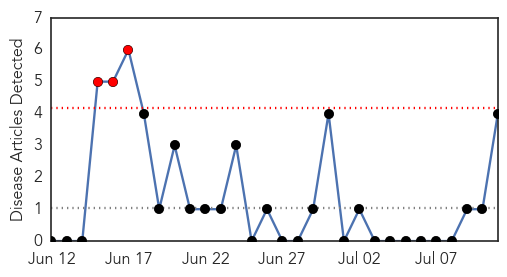

Meningitis
30-Day Web Trend
3 alerts, 0 warnings

30-Day Twitter Trend
0 alerts, 0 warnings

Article Locations

Article Confidences
Top Articles:
Top Tweets:
-
No tweets found for Jul 11, 2014
Swine Flu
30-Day Web Trend
0 alerts, 0 warnings

30-Day Twitter Trend
0 alerts, 0 warnings

Article Locations

Article Confidences

Top Articles:
- 0.999
- Flu season shows signs of waning; young and middle-aged adults have been hit hardest
- 0.982
- Lawmakers Say Migrant Children Are Diseased, Should Be Denied Shelter
- 0.926
- Large international study suggests flu drugs saved lives in 2009 H1N1 pandemic
- 0.833
- Tamiflu's effectiveness in cutting flu hospitalizations questioned
- 0.637
- Government Downplays Immigrant Disease Crisis
Top Tweets:
-
No tweets found for Jul 11, 2014